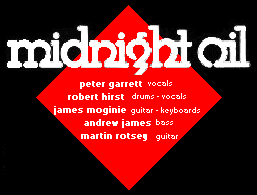
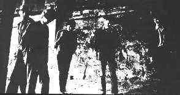

Lyrics / Reviews / Tabs
Talk In Circles
Discography Index


produced by:
keith walker, marlyn productions
and midnight oil
engineered by keith walker
album recorded and mixed at:
albert's studios, sydney australia
september 78
management: gary morris vasicek
sleeve and cover design:
jan paul and midnight oil
(© of Sprint/CBS)
(1978 Midnight Oil)
450902